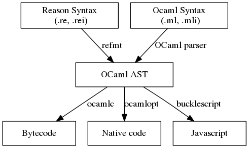
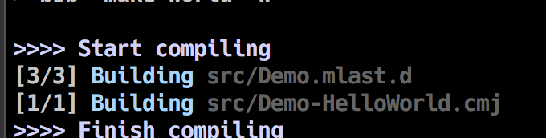

<!DOCTYPE html>
<html lang="zh-tw">
<head><meta name="generator" content="Hexo 3.9.0">

    <!--[if lt IE 9]>
        <style>body {display: none; background: none !important} </style>
        <meta http-equiv="Refresh" Content="0; url=//outdatedbrowser.com/" />
    <![endif]-->

<meta charset="utf-8">
<meta http-equiv="X-UA-Compatible" content="IE=edge, chrome=1">
<meta name="viewport" content="width=device-width, initial-scale=1, maximum-scale=1, user-scalable=no">
<meta name="format-detection" content="telephone=no">
<meta name="author" content="Tomas Lin">


<meta name="description" content="What is ReasonReason 並不是一個新的語言，而是一種新的語法和工具鍊(toolchain)，Ocaml支援。並支援既有的 NPM/YARN。 藉由 BuckleScript將 Reason 編譯為可閱讀的 Javascript  Reason 的優勢 型別系統: Ocaml 型別測試具有 100% 的覆蓋率，而且保有 Javascript 的型別推導，一但編譯過型別保證正確 保有">
<meta name="keywords" content="Javascript,IThome2018,Reason">
<meta property="og:type" content="article">
<meta property="og:title" content="Reason簡介與Helloworld">
<meta property="og:url" content="https://horsekitlin.github.io/2018/10/01/Reason簡介與Helloworld/index.html">
<meta property="og:site_name" content="湯瑪士的部落格">
<meta property="og:description" content="What is ReasonReason 並不是一個新的語言，而是一種新的語法和工具鍊(toolchain)，Ocaml支援。並支援既有的 NPM/YARN。 藉由 BuckleScript將 Reason 編譯為可閱讀的 Javascript  Reason 的優勢 型別系統: Ocaml 型別測試具有 100% 的覆蓋率，而且保有 Javascript 的型別推導，一但編譯過型別保證正確 保有">
<meta property="og:locale" content="zh-tw">
<meta property="og:image" content="https://horsekitlin.github.io/images/Reason_Helloworld/compiler_flow.png">
<meta property="og:image" content="https://horsekitlin.github.io/images/Reason_Helloworld/start1.png">
<meta property="og:updated_time" content="2023-09-16T07:22:46.961Z">
<meta name="twitter:card" content="summary">
<meta name="twitter:title" content="Reason簡介與Helloworld">
<meta name="twitter:description" content="What is ReasonReason 並不是一個新的語言，而是一種新的語法和工具鍊(toolchain)，Ocaml支援。並支援既有的 NPM/YARN。 藉由 BuckleScript將 Reason 編譯為可閱讀的 Javascript  Reason 的優勢 型別系統: Ocaml 型別測試具有 100% 的覆蓋率，而且保有 Javascript 的型別推導，一但編譯過型別保證正確 保有">
<meta name="twitter:image" content="https://horsekitlin.github.io/images/Reason_Helloworld/compiler_flow.png">

<link rel="apple-touch-icon" href="/apple-touch-icon.png">


    <link rel="alternate" href="/atom.xml" title="湯瑪士的部落格" type="application/atom+xml">


    <link rel="shortcut icon" href="/favicon.png">


    <link href="//cdn.bootcss.com/animate.css/3.5.1/animate.min.css" rel="stylesheet">


    <link href="//cdn.bootcss.com/fancybox/2.1.5/jquery.fancybox.min.css" rel="stylesheet">


    <script src="//cdn.bootcss.com/pace/1.0.2/pace.min.js"></script>
    <link href="//cdn.bootcss.com/pace/1.0.2/themes/blue/pace-theme-minimal.css" rel="stylesheet">


<link rel="stylesheet" href="/css/style.css">


<link href="//cdn.bootcss.com/font-awesome/4.6.3/css/font-awesome.min.css" rel="stylesheet">


<title>Reason簡介與Helloworld | 湯瑪士的部落格</title>

<script src="//cdn.bootcss.com/jquery/2.2.4/jquery.min.js"></script>
<script src="//cdn.bootcss.com/clipboard.js/1.5.10/clipboard.min.js"></script>

<script>
    var yiliaConfig = {
        fancybox: true,
        animate: true,
        isHome: false,
        isPost: true,
        isArchive: false,
        isTag: false,
        isCategory: false,
        fancybox_js: "//cdn.bootcss.com/fancybox/2.1.5/jquery.fancybox.min.js",
        scrollreveal: "//cdn.bootcss.com/scrollReveal.js/3.1.4/scrollreveal.min.js",
        search: undefined
    }
</script>


    <script>
        yiliaConfig.jquery_ui = [true, "//cdn.bootcss.com/jqueryui/1.10.4/jquery-ui.min.js", "//cdn.bootcss.com/jqueryui/1.10.4/css/jquery-ui.min.css"];
    </script>


    <script> yiliaConfig.rootUrl = "\/";</script>


</head></html>
<body>
  <div id="container">
    <div class="left-col">
    <div class="overlay"></div>
<div class="intrude-less">
    <header id="header" class="inner">
        <a href="/" class="profilepic">
            
        </a>
        <hgroup>
          <h1 class="header-author"><a href="/">Tomas Lin</a></h1>
        </hgroup>

        
        <p class="header-subtitle">技術手扎！不定期更新</p>
        

        


        
            <div id="switch-btn" class="switch-btn">
                <div class="icon">
                    <div class="icon-ctn">
                        <div class="icon-wrap icon-house" data-idx="0">
                            <div class="birdhouse"></div>
                            <div class="birdhouse_holes"></div>
                        </div>
                        <div class="icon-wrap icon-ribbon hide" data-idx="1">
                            <div class="ribbon"></div>
                        </div>
                        
                        <div class="icon-wrap icon-link hide" data-idx="2">
                            <div class="loopback_l"></div>
                            <div class="loopback_r"></div>
                        </div>
                        
                        
                        <div class="icon-wrap icon-me hide" data-idx="3">
                            <div class="user"></div>
                            <div class="shoulder"></div>
                        </div>
                        
                    </div>
                    
                </div>
                <div class="tips-box hide">
                    <div class="tips-arrow"></div>
                    <ul class="tips-inner">
                        <li>菜单</li>
                        <li>标签</li>
                        
                        <li>友情链接</li>
                        
                        
                        <li>关于我</li>
                        
                    </ul>
                </div>
            </div>
        

        <div id="switch-area" class="switch-area">
            <div class="switch-wrap">
                <section class="switch-part switch-part1">
                    <nav class="header-menu">
                        <ul>
                        
                            <li><a href="/archives/">主頁</a></li>
                        
                            <li><a href="/archives/">所有文章</a></li>
                        
                            <li><a href="/tags/">標籤</a></li>
                        
                            <li><a href="/about/">關於我</a></li>
                        
                        </ul>
                    </nav>
                    <nav class="header-nav">
                        <ul class="social">
                            
                                <a class="fa Email" href="mailto:passon.com.tw@gmail.com" title="Email"></a>
                            
                                <a class="fa GitHub" href="https://github.com/passontw" title="GitHub"></a>
                            
                        </ul>
                    </nav>
                </section>
                
                
                <section class="switch-part switch-part2">
                    <div class="widget tagcloud" id="js-tagcloud">
                        <ul class="tag-list"><li class="tag-list-item"><a class="tag-list-link" href="/tags/BuckleScript/">BuckleScript</a></li><li class="tag-list-item"><a class="tag-list-link" href="/tags/Css/">Css</a></li><li class="tag-list-item"><a class="tag-list-link" href="/tags/DesignPatten/">DesignPatten</a></li><li class="tag-list-item"><a class="tag-list-link" href="/tags/DevOps/">DevOps</a></li><li class="tag-list-item"><a class="tag-list-link" href="/tags/Docker/">Docker</a></li><li class="tag-list-item"><a class="tag-list-link" href="/tags/FunctionPrograming/">FunctionPrograming</a></li><li class="tag-list-item"><a class="tag-list-link" href="/tags/IThome2018/">IThome2018</a></li><li class="tag-list-item"><a class="tag-list-link" href="/tags/IThome2023/">IThome2023</a></li><li class="tag-list-item"><a class="tag-list-link" href="/tags/Java/">Java</a></li><li class="tag-list-item"><a class="tag-list-link" href="/tags/Javascript/">Javascript</a></li><li class="tag-list-item"><a class="tag-list-link" href="/tags/Kubernetes/">Kubernetes</a></li><li class="tag-list-item"><a class="tag-list-link" href="/tags/Leetcode/">Leetcode</a></li><li class="tag-list-item"><a class="tag-list-link" href="/tags/Material-design/">Material-design</a></li><li class="tag-list-item"><a class="tag-list-link" href="/tags/MessageQueue/">MessageQueue</a></li><li class="tag-list-item"><a class="tag-list-link" href="/tags/Microservies/">Microservies</a></li><li class="tag-list-item"><a class="tag-list-link" href="/tags/Nodejs/">Nodejs</a></li><li class="tag-list-item"><a class="tag-list-link" href="/tags/Python/">Python</a></li><li class="tag-list-item"><a class="tag-list-link" href="/tags/React/">React</a></li><li class="tag-list-item"><a class="tag-list-link" href="/tags/React-Native/">React Native</a></li><li class="tag-list-item"><a class="tag-list-link" href="/tags/Reason/">Reason</a></li><li class="tag-list-item"><a class="tag-list-link" href="/tags/Redux/">Redux</a></li><li class="tag-list-item"><a class="tag-list-link" href="/tags/SocketCluster/">SocketCluster</a></li><li class="tag-list-item"><a class="tag-list-link" href="/tags/Sodility/">Sodility</a></li><li class="tag-list-item"><a class="tag-list-link" href="/tags/Themes/">Themes</a></li><li class="tag-list-item"><a class="tag-list-link" href="/tags/Translate/">Translate</a></li><li class="tag-list-item"><a class="tag-list-link" href="/tags/Truffle/">Truffle</a></li><li class="tag-list-item"><a class="tag-list-link" href="/tags/Typescript/">Typescript</a></li><li class="tag-list-item"><a class="tag-list-link" href="/tags/VSCode/">VSCode</a></li><li class="tag-list-item"><a class="tag-list-link" href="/tags/ithome-12/">ithome 12</a></li><li class="tag-list-item"><a class="tag-list-link" href="/tags/spring-boot/">spring-boot</a></li></ul>
                    </div>
                </section>
                
                
                
                <section class="switch-part switch-part3">
                    <div id="js-friends">
                    
                      <a class="main-nav-link switch-friends-link" href="https://hexo.io">Hexo</a>
                    
                      <a class="main-nav-link switch-friends-link" href="https://pages.github.com/">GitHub</a>
                    
                      <a class="main-nav-link switch-friends-link" href="http://moxfive.xyz/">MOxFIVE</a>
                    
                    </div>
                </section>
                

                
                
                <section class="switch-part switch-part4">
                
                    <div id="js-aboutme">专注于前端</div>
                </section>
                
            </div>
        </div>
    </header>                
</div>
    </div>
    <div class="mid-col">
      <nav id="mobile-nav">
      <div class="overlay">
          <div class="slider-trigger"></div>
          <h1 class="header-author js-mobile-header hide"><a href="/" title="回到主页">Tomas Lin</a></h1>
      </div>
    <div class="intrude-less">
        <header id="header" class="inner">
            <a href="/" class="profilepic">
                
            </a>
            <hgroup>
              <h1 class="header-author"><a href="/" title="回到主页">Tomas Lin</a></h1>
            </hgroup>
            
            <p class="header-subtitle">技術手扎！不定期更新</p>
            
            <nav class="header-menu">
                <ul>
                
                    <li><a href="/archives/">主頁</a></li>
                
                    <li><a href="/archives/">所有文章</a></li>
                
                    <li><a href="/tags/">標籤</a></li>
                
                    <li><a href="/about/">關於我</a></li>
                
                <div class="clearfix"></div>
                </ul>
            </nav>
            <nav class="header-nav">
                        <ul class="social">
                            
                                <a class="fa Email" target="_blank" href="mailto:passon.com.tw@gmail.com" title="Email"></a>
                            
                                <a class="fa GitHub" target="_blank" href="https://github.com/passontw" title="GitHub"></a>
                            
                        </ul>
            </nav>
        </header>                
    </div>
    <link class="menu-list" tags="标签" friends="友情链接" about="关于我"/>
</nav>
      <div class="body-wrap"><article id="post-Reason簡介與Helloworld" class="article article-type-post" itemscope itemprop="blogPost">
  
    <div class="article-meta">
      <a href="/2018/10/01/Reason簡介與Helloworld/" class="article-date">
      <time datetime="2018-10-01T03:51:55.000Z" itemprop="datePublished">2018-10-01</time>
</a>


    </div>
  
  <div class="article-inner">
    
      <input type="hidden" class="isFancy" />
    
    
      <header class="article-header">
        
  
    <h1 class="article-title" itemprop="name">
      Reason簡介與Helloworld
    </h1>
  

      </header>
      
      <div class="article-info article-info-post">
        
    <div class="article-category tagcloud">
    <a class="article-category-link" href="/categories/Reason/">Reason</a>
    </div>


        
    <div class="article-tag tagcloud">
        <ul class="article-tag-list"><li class="article-tag-list-item"><a class="article-tag-list-link" href="/tags/IThome2018/">IThome2018</a></li><li class="article-tag-list-item"><a class="article-tag-list-link" href="/tags/Javascript/">Javascript</a></li><li class="article-tag-list-item"><a class="article-tag-list-link" href="/tags/Reason/">Reason</a></li></ul>
    </div>

        <div class="clearfix"></div>
      </div>
      
    
    <div class="article-entry" itemprop="articleBody">
      
          
        <h1 id="What-is-Reason"><a href="#What-is-Reason" class="headerlink" title="What is Reason"></a>What is Reason</h1><p><code>Reason</code> 並不是一個新的語言，而是一種新的語法和工具鍊(toolchain)，<a href="http://ocaml.org/" target="_blank" rel="noopener">Ocaml</a>支援。並支援既有的 NPM/YARN。</p>
<p>藉由 <a href="https://bucklescript.github.io/" target="_blank" rel="noopener">BuckleScript</a>將 <code>Reason</code> 編譯為可閱讀的 <code>Javascript</code> </p>
<h2 id="Reason-的優勢"><a href="#Reason-的優勢" class="headerlink" title="Reason 的優勢"></a>Reason 的優勢</h2><ul>
<li>型別系統: Ocaml 型別測試具有 <code>100%</code> 的覆蓋率，而且保有 <code>Javascript</code> 的型別推導，一但編譯過型別保證正確</li>
<li>保有簡單和實用性:<ul>
<li>允許 side-effect, mutable</li>
<li>也可以使用 immutable functional</li>
</ul>
</li>
<li>重視效能和大小: Reason 的建置系統 <code>bsb</code> 建置時間小於 100ms(遞增)，產生的結果也會很小</li>
<li>漸進式學習 &amp; 程式碼庫轉換: 也可以在 <code>Reason</code> 中貼上 <code>Javascript</code> 的程式片段再慢慢調整為 <code>Reason</code> 的程式碼</li>
<li>基本使用 <code>immutable and functional</code> 但是也提供 <code>side-effect</code> 和 <code>mutation</code> 的彈性</li>
<li>Reason 的 build system (bsb) 建構精簡可閱讀的 <code>Javascript code</code></li>
<li>完整的生態圈和工具鍊: <a href="https://reasonml.github.io/docs/zh-TW/editor-plugins" target="_blank" rel="noopener">編輯器</a>, <a href="https://reasonml.github.io/docs/zh-TW/libraries" target="_blank" rel="noopener">NPM 套件</a>, <a href="https://github.com/reasonml/reason-react" target="_blank" rel="noopener">Reason-React</a>, <a href="https://webpack.js.org/" target="_blank" rel="noopener">webpack</a></li>
</ul>
<h2 id="compiler-流程"><a href="#compiler-流程" class="headerlink" title="compiler 流程"></a>compiler 流程</h2><p>當你完成一個簡單的 <code>.re</code> 檔案 (這是基本的 reason檔案)</p>
<p>會經由下圖的過程幫你編譯成 <code>Javascript</code></p>
<p></p>
<h2 id="Install-Reason-on-Mac"><a href="#Install-Reason-on-Mac" class="headerlink" title="Install Reason on Mac"></a>Install Reason on Mac</h2><figure class="highlight coffeescript"><table><tr><td class="gutter"><pre><span class="line">1</span><br><span class="line">2</span><br></pre></td><td class="code"><pre><span class="line">$ <span class="built_in">npm</span> install -g reason-cli@latest-macos</span><br><span class="line">$ <span class="built_in">npm</span> install -g bs-platform</span><br></pre></td></tr></table></figure>
<ul>
<li>reason-cli - Reason 的環境套件</li>
<li>bs-platform - BuckleScript 和 Reason 基本套件</li>
</ul>
<h3 id="initial-First-Reason-Project"><a href="#initial-First-Reason-Project" class="headerlink" title="initial First Reason Project"></a>initial First Reason Project</h3><figure class="highlight armasm"><table><tr><td class="gutter"><pre><span class="line">1</span><br></pre></td><td class="code"><pre><span class="line">$ <span class="keyword">bsb </span>-init hello-world -theme  <span class="keyword">basic-reason</span></span><br></pre></td></tr></table></figure>
<p>第一次初始化之後會得到這樣的檔案結構<br><figure class="highlight armasm"><table><tr><td class="gutter"><pre><span class="line">1</span><br><span class="line">2</span><br><span class="line">3</span><br><span class="line">4</span><br><span class="line">5</span><br><span class="line">6</span><br><span class="line">7</span><br><span class="line">8</span><br></pre></td><td class="code"><pre><span class="line">.</span><br><span class="line">├── README.md</span><br><span class="line">├── <span class="keyword">bsconfig.json</span></span><br><span class="line"><span class="keyword">├── </span>node_modules</span><br><span class="line">│   └── <span class="keyword">bs-platform </span>-&gt; /usr/local/lib/node_modules/<span class="keyword">bs-platform</span></span><br><span class="line"><span class="keyword">├── </span>package.json</span><br><span class="line">└── src</span><br><span class="line">    └── Demo.re</span><br></pre></td></tr></table></figure></p>
<h4 id="bsconfig-json"><a href="#bsconfig-json" class="headerlink" title="bsconfig.json"></a>bsconfig.json</h4><p><code>BuckleScript</code> 的設定 json 檔案</p>
<figure class="highlight json"><table><tr><td class="gutter"><pre><span class="line">1</span><br><span class="line">2</span><br><span class="line">3</span><br><span class="line">4</span><br><span class="line">5</span><br><span class="line">6</span><br><span class="line">7</span><br><span class="line">8</span><br><span class="line">9</span><br><span class="line">10</span><br><span class="line">11</span><br><span class="line">12</span><br><span class="line">13</span><br><span class="line">14</span><br><span class="line">15</span><br><span class="line">16</span><br><span class="line">17</span><br><span class="line">18</span><br><span class="line">19</span><br><span class="line">20</span><br><span class="line">21</span><br></pre></td><td class="code"><pre><span class="line">&#123;</span><br><span class="line">  <span class="attr">"name"</span>: <span class="string">"hello-world"</span>,</span><br><span class="line">  <span class="attr">"version"</span>: <span class="string">"0.1.0"</span>,</span><br><span class="line">  <span class="attr">"sources"</span>: &#123;</span><br><span class="line">    <span class="attr">"dir"</span> : <span class="string">"src"</span>,</span><br><span class="line">    <span class="attr">"subdirs"</span> : <span class="literal">true</span></span><br><span class="line">  &#125;,</span><br><span class="line">  <span class="attr">"package-specs"</span>: &#123;</span><br><span class="line">    <span class="attr">"module"</span>: <span class="string">"commonjs"</span>,</span><br><span class="line">    <span class="attr">"in-source"</span>: <span class="literal">true</span></span><br><span class="line">  &#125;,</span><br><span class="line">  <span class="attr">"suffix"</span>: <span class="string">".bs.js"</span>,</span><br><span class="line">  <span class="attr">"bs-dependencies"</span>: [</span><br><span class="line">      <span class="comment">// add your dependencies here. You'd usually install them normally through `npm install my-dependency`. If my-dependency has a bsconfig.json too, then everything will work seamlessly.</span></span><br><span class="line">  ],</span><br><span class="line">  <span class="attr">"warnings"</span>: &#123;</span><br><span class="line">    <span class="attr">"error"</span> : <span class="string">"+101"</span></span><br><span class="line">  &#125;,</span><br><span class="line">  <span class="attr">"namespace"</span>: <span class="literal">true</span>,</span><br><span class="line">  <span class="attr">"refmt"</span>: <span class="number">3</span></span><br><span class="line">&#125;</span><br></pre></td></tr></table></figure>
<ul>
<li>name - 專案名稱</li>
<li>version - 版本</li>
<li>sources<ul>
<li>dir - source 的資料夾</li>
<li>subdirs - 是否要編譯子資料夾內的 re (Boolean or Array)</li>
</ul>
</li>
<li>package-specs<ul>
<li>module - 編譯後使用哪種 Javascript 模組 (default: commonjs)</li>
<li>in-source - 編譯的時候是否也要輸出</li>
</ul>
</li>
<li>suffix - 編譯後的 js 的 後綴</li>
<li>bs-dependencies - 列出你使用 NPM(Yarn) 安裝的第三方 套件</li>
<li>bs-dev-dependencies- 列出你使用 NPM(Yarn) 安裝的第三方 開發套件</li>
<li>namespace - name 是 package 名稱，可以選擇是否開啟命名空間 (default: false)<ul>
<li>例如您有一個 <code>Util.re</code> 的檔案，如果沒有開啟命名空間，你的第三方套件也有一個 <code>Util</code> 的套件，他們會造成衝突，，這個參數影響的是這個 lib 的<strong>使用者</strong>，而不是自己本身</li>
</ul>
</li>
<li>refmt -  當你使用 <a href="https://reasonml.github.io/blog/2017/10/27/reason3.html" target="_blank" rel="noopener">Reason V3 syntax</a> 則明確指定為 <code>3</code></li>
<li>reason - 預設是打開的，但是若有使用 <code>ReasonReact</code>, 設定則為</li>
</ul>
<figure class="highlight json"><table><tr><td class="gutter"><pre><span class="line">1</span><br><span class="line">2</span><br><span class="line">3</span><br><span class="line">4</span><br></pre></td><td class="code"><pre><span class="line">&#123;</span><br><span class="line">  <span class="attr">"reason"</span>: &#123;<span class="attr">"react-jsx"</span>: <span class="number">2</span>&#125;,</span><br><span class="line">  <span class="attr">"refmt"</span>: <span class="number">3</span></span><br><span class="line">&#125;</span><br></pre></td></tr></table></figure>
<h4 id="merlin"><a href="#merlin" class="headerlink" title="merlin"></a>merlin</h4><p>在你的專案中還隱藏了一個小小的檔案 <code>.merlin</code></p>
<p>這個檔案雖然只有短短幾行</p>
<p>但是扮演相當重要的角色</p>
<p>他會協助你的 <code>格式檢查</code>, <code>autocompleate</code>…</p>
<h2 id="執行您的第一個-Hello-world"><a href="#執行您的第一個-Hello-world" class="headerlink" title="執行您的第一個 Hello world"></a>執行您的第一個 Hello world</h2><figure class="highlight dockerfile"><table><tr><td class="gutter"><pre><span class="line">1</span><br></pre></td><td class="code"><pre><span class="line">$ npm <span class="keyword">run</span><span class="bash"> start</span></span><br></pre></td></tr></table></figure>
<p>然後會開始編譯</p>
<p></p>
<figure class="highlight crmsh"><table><tr><td class="gutter"><pre><span class="line">1</span><br><span class="line">2</span><br></pre></td><td class="code"><pre><span class="line">$ <span class="keyword">node</span> <span class="title">src</span>/Demo.bs.js</span><br><span class="line">// Hello, BuckleScript <span class="keyword">and</span> Reason!</span><br></pre></td></tr></table></figure>
<p>Welcom Reason’s World</p>

      
    </div>
    
  </div>
  
    
    <div class="copyright">
        <p><span>本文标题:</span><a href="/2018/10/01/Reason簡介與Helloworld/">Reason簡介與Helloworld</a></p>
        <p><span>文章作者:</span><a href="/" title="回到主页">Tomas Lin</a></p>
        <p><span>发布时间:</span>2018-10-01, 11:51:55</p>
        <p><span>最后更新:</span>2023-09-16, 15:22:46</p>
        <p>
            <span>原始链接:</span><a class="post-url" href="/2018/10/01/Reason簡介與Helloworld/" title="Reason簡介與Helloworld">https://horsekitlin.github.io/2018/10/01/Reason簡介與Helloworld/</a>
            <span class="copy-path" data-clipboard-text="原文: https://horsekitlin.github.io/2018/10/01/Reason簡介與Helloworld/　　作者: Tomas Lin" title="点击复制文章链接"><i class="fa fa-clipboard"></i></span>
            <script> var clipboard = new Clipboard('.copy-path'); </script>
        </p>
        <p>
            <span>许可协议:</span><i class="fa fa-creative-commons"></i> <a rel="license" href="http://creativecommons.org/licenses/by-nc-sa/4.0/" title="CC BY-NC-SA 4.0 International" target = "_blank">"署名-非商用-相同方式共享 4.0"</a> 转载请保留原文链接及作者。
        </p>
    </div>


    <nav id="article-nav">
        
            <div id="article-nav-newer" class="article-nav-title">
                <a href="/2018/10/03/Reason-BasicType/">
                    Reason-BasicType
                </a>
            </div>
        
        
            <div id="article-nav-older" class="article-nav-title">
                <a href="/2018/05/05/Truffle-pet-demo/">
                    truffle pet demo
                </a>
            </div>
        
    </nav>

  
</article>

    <div id="toc" class="toc-article">
        <strong class="toc-title">文章目录</strong>
        
            <ol class="toc"><li class="toc-item toc-level-1"><a class="toc-link" href="#What-is-Reason"><span class="toc-number">1.</span> <span class="toc-text">What is Reason</span></a><ol class="toc-child"><li class="toc-item toc-level-2"><a class="toc-link" href="#Reason-的優勢"><span class="toc-number">1.1.</span> <span class="toc-text">Reason 的優勢</span></a></li><li class="toc-item toc-level-2"><a class="toc-link" href="#compiler-流程"><span class="toc-number">1.2.</span> <span class="toc-text">compiler 流程</span></a></li><li class="toc-item toc-level-2"><a class="toc-link" href="#Install-Reason-on-Mac"><span class="toc-number">1.3.</span> <span class="toc-text">Install Reason on Mac</span></a><ol class="toc-child"><li class="toc-item toc-level-3"><a class="toc-link" href="#initial-First-Reason-Project"><span class="toc-number">1.3.1.</span> <span class="toc-text">initial First Reason Project</span></a><ol class="toc-child"><li class="toc-item toc-level-4"><a class="toc-link" href="#bsconfig-json"><span class="toc-number">1.3.1.1.</span> <span class="toc-text">bsconfig.json</span></a></li><li class="toc-item toc-level-4"><a class="toc-link" href="#merlin"><span class="toc-number">1.3.1.2.</span> <span class="toc-text">merlin</span></a></li></ol></li></ol></li><li class="toc-item toc-level-2"><a class="toc-link" href="#執行您的第一個-Hello-world"><span class="toc-number">1.4.</span> <span class="toc-text">執行您的第一個 Hello world</span></a></li></ol></li></ol>
        
    </div>
    <style>
        .left-col .switch-btn,
        .left-col .switch-area {
            display: none;
        }
        .toc-level-3 i,
        .toc-level-3 ol {
            display: none !important;
        }
    </style>

    <input type="button" id="tocButton" value="隐藏目录"  title="点击按钮隐藏或者显示文章目录">

    <script>
        yiliaConfig.toc = ["隐藏目录", "显示目录", !!"false"];
    </script>


    
<div class="share">
    
        <!-- <div class="bdsharebuttonbox">
            <a href="#" class="fa fa-twitter bds_twi" data-cmd="twi" title="分享到推特"></a>
            <a href="#" class="fa fa-weibo bds_tsina" data-cmd="tsina" title="分享到新浪微博"></a>
            <a href="#" class="fa fa-qq bds_sqq" data-cmd="sqq" title="分享给 QQ 好友"></a>
            <a href="#" class="fa fa-files-o bds_copy" data-cmd="copy" title="复制网址"></a>
            <a href="#" class="fa fa fa-envelope-o bds_mail" data-cmd="mail" title="通过邮件分享"></a>
            <a href="#" class="fa fa-weixin bds_weixin" data-cmd="weixin" title="生成文章二维码"></a>
            <a href="#" class="fa fa-share-alt bds_more" data-cmd="more"></i></a>
        </div> -->
        <script>
            window._bd_share_config={
                "common":{"bdSnsKey":{},"bdText":"Reason簡介與Helloworld　| 湯瑪士的部落格　","bdMini":"2","bdMiniList":false,"bdPic":"","bdStyle":"0","bdSize":"24"},"share":{}};with(document)0[(getElementsByTagName('head')[0]||body).appendChild(createElement('script')).src='http://bdimg.share.baidu.com/static/api/js/share.js?v=89860593.js?cdnversion='+~(-new Date()/36e5)];
        </script>
    

    
</div>


    


    <div class="scroll" id="post-nav-button">
        
            <a href="/2018/10/03/Reason-BasicType/" title="上一篇: Reason-BasicType">
                <i class="fa fa-angle-left"></i>
            </a>
        

        <a title="文章列表"><i class="fa fa-bars"></i><i class="fa fa-times"></i></a>

        
            <a href="/2018/05/05/Truffle-pet-demo/" title="下一篇: truffle pet demo">
                <i class="fa fa-angle-right"></i>
            </a>
        
    </div>

    <ul class="post-list"><li class="post-list-item"><a class="post-list-link" href="/2023/10/01/Day-05-Deploy-https-website/">Day-05-Deploy-https-website-part01</a></li><li class="post-list-item"><a class="post-list-link" href="/2023/09/20/Day-05-ingress-controller/">Day-05-ingress-controller</a></li><li class="post-list-item"><a class="post-list-link" href="/2023/09/19/Day-04-Deploy-to-cluster/">Day-04-Deploy-to-cluster</a></li><li class="post-list-item"><a class="post-list-link" href="/2023/09/18/Day-03-Static-Site-Container/">Day-03-Container</a></li><li class="post-list-item"><a class="post-list-link" href="/2023/09/15/Day-02-Express與Docker/">Day-02-Express與Docker</a></li><li class="post-list-item"><a class="post-list-link" href="/2023/09/15/Day-01-Docker簡介/">Day-01-Docker簡介</a></li><li class="post-list-item"><a class="post-list-link" href="/2020/12/26/ReactNative-fastlane-Android/">React Native-fastlane-Android</a></li><li class="post-list-item"><a class="post-list-link" href="/2020/10/12/React-Native-Fastlane-IOS/">React-Native-Fastlane-IOS</a></li><li class="post-list-item"><a class="post-list-link" href="/2020/10/09/React-create-rxdb-example/">React-create-rxdb-example</a></li><li class="post-list-item"><a class="post-list-link" href="/2020/10/07/React-Native-Cache-PartII/">React-Native-Cache-PartII</a></li><li class="post-list-item"><a class="post-list-link" href="/2020/10/07/React-Native-Cache-PartI/">React Native Cache PartI</a></li><li class="post-list-item"><a class="post-list-link" href="/2020/10/04/React-Native-Notification-Android/">React-Native-Notification-Android</a></li><li class="post-list-item"><a class="post-list-link" href="/2020/10/04/React-Native-Notification-IOS/">React-Native-Notification-IOS</a></li><li class="post-list-item"><a class="post-list-link" href="/2020/09/22/Socketcluster-client-AuthorizationEngine/">Socketcluster-client-AuthorizationEngine</a></li><li class="post-list-item"><a class="post-list-link" href="/2020/09/21/SocketCluster-scc/">SocketCluster-scc</a></li><li class="post-list-item"><a class="post-list-link" href="/2020/09/21/SocketCluster-Storage/">SociekCluster-Storage</a></li><li class="post-list-item"><a class="post-list-link" href="/2020/09/18/Redux-Part-III/">Redux-Part-III</a></li><li class="post-list-item"><a class="post-list-link" href="/2020/09/17/Redux-Part-II/">Redux-Part-II</a></li><li class="post-list-item"><a class="post-list-link" href="/2020/09/16/Redux-Part-I/">Redux-Part-I</a></li><li class="post-list-item"><a class="post-list-link" href="/2020/09/15/React-Native-Navigation/">React-Native-Navigation</a></li><li class="post-list-item"><a class="post-list-link" href="/2020/09/15/React-Native-connect-server/">React-Native-connect-server</a></li><li class="post-list-item"><a class="post-list-link" href="/2020/09/11/Java-Spring-Boot-variable/">Java-Spring-Boot-variable</a></li><li class="post-list-item"><a class="post-list-link" href="/2020/09/11/Java-Spring-Boot-Initial/">Java-Spring-Boot-Initial</a></li><li class="post-list-item"><a class="post-list-link" href="/2020/09/09/SocketCluster-Consumer/">SocketCluster-Consumer</a></li><li class="post-list-item"><a class="post-list-link" href="/2020/09/09/Socketcluster-Cluster-initial/">SocketCluster Cluster initial.md</a></li><li class="post-list-item"><a class="post-list-link" href="/2020/09/09/SocketCluster-Authorization/">SocketCluster-Authorization</a></li><li class="post-list-item"><a class="post-list-link" href="/2019/12/06/ReactNative-ExportComponentUI/">React Native-ExportComponentUI</a></li><li class="post-list-item"><a class="post-list-link" href="/2019/06/04/Moleculer-Start/">Moleculer-Start</a></li><li class="post-list-item"><a class="post-list-link" href="/2019/02/24/RN-Platform/">React Native-Platform</a></li><li class="post-list-item"><a class="post-list-link" href="/2019/02/07/Truffle-pet-user-interface/">Truffle-pet-user-interface</a></li><li class="post-list-item"><a class="post-list-link" href="/2019/01/08/RN-JestInReactNative/">RN-JestInReactNative</a></li><li class="post-list-item"><a class="post-list-link" href="/2019/01/02/RN-code-push/">RN-code-push</a></li><li class="post-list-item"><a class="post-list-link" href="/2018/11/29/material-ui-themes/">material-ui-themes</a></li><li class="post-list-item"><a class="post-list-link" href="/2018/11/13/ReasonReact-lifeCycle/">ReasonReact-LifeCycle</a></li><li class="post-list-item"><a class="post-list-link" href="/2018/11/12/ReasonReact-auto-deploy/">ReasonReact-auto-deploy</a></li><li class="post-list-item"><a class="post-list-link" href="/2018/11/11/ReasonReact-publish-package/">ReasonReact-publish-package</a></li><li class="post-list-item"><a class="post-list-link" href="/2018/11/10/ReasonReact-Todo-Tutorial-PartII-1/">ReasonReact-Todo-Tutorial-PartII</a></li><li class="post-list-item"><a class="post-list-link" href="/2018/11/10/ReasonReact-Todo-Tutorial-PartII/">ReasonReact-Todo-Tutorial-PartIII</a></li><li class="post-list-item"><a class="post-list-link" href="/2018/11/10/ReasonReact-Todo-Tutorial-PartI/">ReasonReact-Todo-Tutorial-PartI</a></li><li class="post-list-item"><a class="post-list-link" href="/2018/11/04/Reason-ExternalPromiseAPI/">Reason-ExternalPromiseAPI</a></li><li class="post-list-item"><a class="post-list-link" href="/2018/11/04/ReasonReact-Component/">ReasonReact-Component</a></li><li class="post-list-item"><a class="post-list-link" href="/2018/11/04/ReasonReact-Helloworld/">ReasonReact-Helloworld</a></li><li class="post-list-item"><a class="post-list-link" href="/2018/11/02/Reason-Create-NPM-Package-PartII/">Reason-Create-NPM-Package-PartII</a></li><li class="post-list-item"><a class="post-list-link" href="/2018/11/02/Reason-Create-NPM-Package-PartI/">Reason Create NPM Package Part-I</a></li><li class="post-list-item"><a class="post-list-link" href="/2018/10/29/BuckleScript-Function/">BuckleScript-Function</a></li><li class="post-list-item"><a class="post-list-link" href="/2018/10/28/Express-MongoDB-PartII/">Express-MongoDB-PartII</a></li><li class="post-list-item"><a class="post-list-link" href="/2018/10/27/Express-MongoDB/">Express-MongoDB</a></li><li class="post-list-item"><a class="post-list-link" href="/2018/10/27/Express-Middleware/">Express-Middleware</a></li><li class="post-list-item"><a class="post-list-link" href="/2018/10/27/Reason-BasicType-Module/">Reason-BasicType-Module</a></li><li class="post-list-item"><a class="post-list-link" href="/2018/10/26/Express-Router/">Express-Router</a></li><li class="post-list-item"><a class="post-list-link" href="/2018/10/21/Express-helloworld-API/">Express-helloworld-API</a></li><li class="post-list-item"><a class="post-list-link" href="/2018/10/20/BasicType-OptionsAndSomeAndNone/">BasicType-OptionsAndSomeAndNone</a></li><li class="post-list-item"><a class="post-list-link" href="/2018/10/19/BuckleScript-Object/">BuckleScript-Object</a></li><li class="post-list-item"><a class="post-list-link" href="/2018/10/14/BuckleScript-Best-Friend/">BuckleScript-Best-Friend</a></li><li class="post-list-item"><a class="post-list-link" href="/2018/10/11/Reason-BasicTypeIII/">Reason-BasicTypeIII</a></li><li class="post-list-item"><a class="post-list-link" href="/2018/10/10/Reason-BasicTypeII/">Reason-BasicType Part-II</a></li><li class="post-list-item"><a class="post-list-link" href="/2018/10/03/Reason-BasicType/">Reason-BasicType</a></li><li class="post-list-item"><a class="post-list-link" href="/2018/10/01/Reason簡介與Helloworld/">Reason簡介與Helloworld</a></li><li class="post-list-item"><a class="post-list-link" href="/2018/05/05/Truffle-pet-demo/">truffle pet demo</a></li><li class="post-list-item"><a class="post-list-link" href="/2018/02/02/Javascript-HighOrderFunction/">Javascript-High Order Function</a></li><li class="post-list-item"><a class="post-list-link" href="/2018/02/02/Redux-compose/">Map</a></li><li class="post-list-item"><a class="post-list-link" href="/2018/01/05/RN-JestErrorWithRNRouterFlux/">React Native import Image Error</a></li><li class="post-list-item"><a class="post-list-link" href="/2017/11/07/Typescript-JSX/">Typescript-JSX</a></li><li class="post-list-item"><a class="post-list-link" href="/2017/11/06/TypeScript-Generic/">TypeScript-Generic</a></li><li class="post-list-item"><a class="post-list-link" href="/2017/11/05/Typescript-Function/">Typescript-Function</a></li><li class="post-list-item"><a class="post-list-link" href="/2017/11/04/Typescript-Classes/">Typescript-Classes</a></li><li class="post-list-item"><a class="post-list-link" href="/2017/11/03/Typescript-Interfaces/">Typescript-Interfaces</a></li><li class="post-list-item"><a class="post-list-link" href="/2017/11/02/TypeScript-VariableDecarations/">TypeScript-VariableDecarations</a></li><li class="post-list-item"><a class="post-list-link" href="/2017/11/02/Leetcode-Q8/">Leetcode-Q8</a></li><li class="post-list-item"><a class="post-list-link" href="/2017/10/31/Typescript-BasicType/">Typescript-BasicType</a></li><li class="post-list-item"><a class="post-list-link" href="/2017/10/31/TypeScript-ReactAndWebpack/">TypeScript-ReactAndWebpack</a></li><li class="post-list-item"><a class="post-list-link" href="/2017/10/30/Typescript-MigratingFromJavascript/">Typescript-Migrating from Javascript</a></li><li class="post-list-item"><a class="post-list-link" href="/2017/10/29/Typescript-Gulp/">TypeScriptWithGulp</a></li><li class="post-list-item"><a class="post-list-link" href="/2017/10/27/Typescript-TypescriptIn5Minutes/">TypeScript-TypeScriptIn5Minutes</a></li><li class="post-list-item"><a class="post-list-link" href="/2017/10/23/Leetcode-Q7/">Leedcode-Q7</a></li><li class="post-list-item"><a class="post-list-link" href="/2017/08/31/NPM-Publish-With-Gulp/">NPM publish with gulp</a></li><li class="post-list-item"><a class="post-list-link" href="/2017/07/31/ReactUnitestWithJest/">ReactUnitestWithJest</a></li><li class="post-list-item"><a class="post-list-link" href="/2017/06/10/Python-Decorator/">Python-Decorator</a></li><li class="post-list-item"><a class="post-list-link" href="/2017/06/09/Debugging-Nodejs-With-VSCode/">Debugging-Nodejs-With-VSCode</a></li><li class="post-list-item"><a class="post-list-link" href="/2017/05/31/NodeDesignPatten-06/">NodeDesignPatten-06</a></li><li class="post-list-item"><a class="post-list-link" href="/2017/05/27/RabbitMQ-Routing/">RabbitMQ-Routing</a></li><li class="post-list-item"><a class="post-list-link" href="/2017/05/26/RabbitMQ-PublishAndSubscribe/">RabbitMQ-PublishAndSubscribe</a></li><li class="post-list-item"><a class="post-list-link" href="/2017/05/24/RabbitMQ-WorkQueue/">RabbitMQ-WorkQueue</a></li><li class="post-list-item"><a class="post-list-link" href="/2017/05/22/RabbitMQ-Install/">RabbitMQ-Install</a></li><li class="post-list-item"><a class="post-list-link" href="/2017/05/09/Leetcode-Q6/">Leetcode-Q6</a></li><li class="post-list-item"><a class="post-list-link" href="/2017/05/09/Leetcode-Q5/">Leetcode-Q5</a></li><li class="post-list-item"><a class="post-list-link" href="/2017/05/07/Leetcode-Q4/">Leetcode-Q4</a></li><li class="post-list-item"><a class="post-list-link" href="/2017/05/06/Leetcode-Q3/">Leetcode-Q3</a></li><li class="post-list-item"><a class="post-list-link" href="/2017/05/05/Leetcode-Q2/">Leetcode-Q2</a></li><li class="post-list-item"><a class="post-list-link" href="/2017/05/03/Leetcode-Q1/">Leetcode-Q1</a></li><li class="post-list-item"><a class="post-list-link" href="/2017/04/29/NodeDesignPatten-01/">NodeDesignPatten-01</a></li></ul>


    <script>
        
    </script>
</div>
      <footer id="footer">
    <div class="outer">
        <div id="footer-info">
            <div class="footer-left">
                <i class="fa fa-copyright"></i> 
                2016-2024 Tomas Lin
            </div>
            <!-- <div class="footer-right">
                <a href="http://hexo.io/" target="_blank" title="快速、简洁且高效的博客框架">Hexo</a>  Theme <a href="https://github.com/MOxFIVE/hexo-theme-yelee" target="_blank" title="简而不减 Hexo 双栏博客主题  v3.5">Yelee</a> by MOxFIVE <i class="fa fa-heart animated infinite pulse"></i>
            </div> -->
        </div>
        
            <div class="visit">
                
                    <span id="busuanzi_container_site_pv" style='display:none'>
                        <span id="site-visit" title="本站到访数"><i class="fa fa-user" aria-hidden="true"></i><span id="busuanzi_value_site_uv"></span>
                        </span>
                    </span>
                
                
                    <span>| </span>
                
                
                    <span id="busuanzi_container_page_pv" style='display:none'>
                        <span id="page-visit"  title="本页阅读量"><i class="fa fa-eye animated infinite pulse" aria-hidden="true"></i><span id="busuanzi_value_page_pv"></span>
                        </span>
                    </span>
                
            </div>
        
    </div>
</footer>
    </div>
    
<script data-main="/js/main.js" src="//cdn.bootcss.com/require.js/2.2.0/require.min.js"></script>

    <script>
        $(document).ready(function() {
            var iPad = window.navigator.userAgent.indexOf('iPad');
            if (iPad > -1 || $(".left-col").css("display") === "none") {
                var bgColorList = ["#9db3f4", "#414141", "#e5a859", "#f5dfc6", "#c084a0", "#847e72", "#cd8390", "#996731"];
                var bgColor = Math.ceil(Math.random() * (bgColorList.length - 1));
                $("body").css({"background-color": bgColorList[bgColor], "background-size": "cover"});
            }
            else {
                var backgroundnum = 5;
                var backgroundimg = "url(/background/bg-x.jpg)".replace(/x/gi, Math.ceil(Math.random() * backgroundnum));
                $("body").css({"background": backgroundimg, "background-attachment": "fixed", "background-size": "cover"});
            }
        })
    </script>


<div class="scroll" id="scroll">
    <a href="#" title="返回顶部"><i class="fa fa-arrow-up"></i></a>
    <a href="#comments" onclick="load$hide();" title="查看评论"><i class="fa fa-comments-o"></i></a>
    <a href="#footer" title="转到底部"><i class="fa fa-arrow-down"></i></a>
</div>
<script>
    // Open in New Window
    
        var oOpenInNew = {
            
            
            
            
            
            
             archives: ".archive-article-title", 
             miniArchives: "a.post-list-link", 
            
             friends: "#js-friends a", 
             socail: ".social a" 
        }
        for (var x in oOpenInNew) {
            $(oOpenInNew[x]).attr("target", "_blank");
        }
    
</script>

<script async src="https://dn-lbstatics.qbox.me/busuanzi/2.3/busuanzi.pure.mini.js">
</script>
  </div>
</body>
</html>